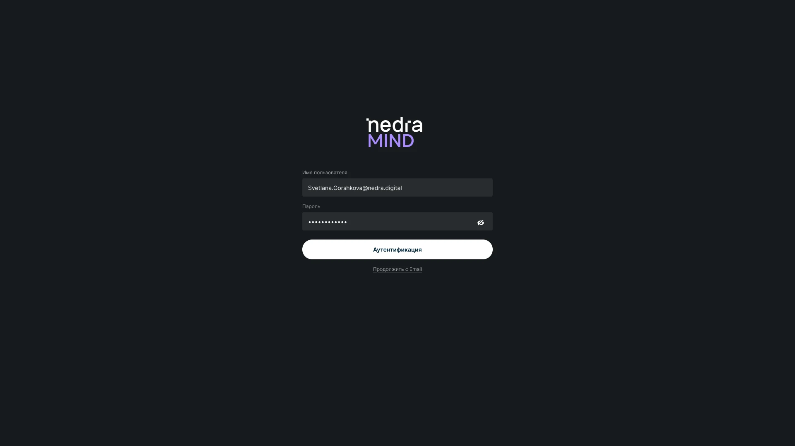
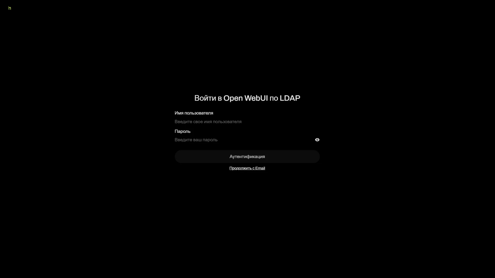
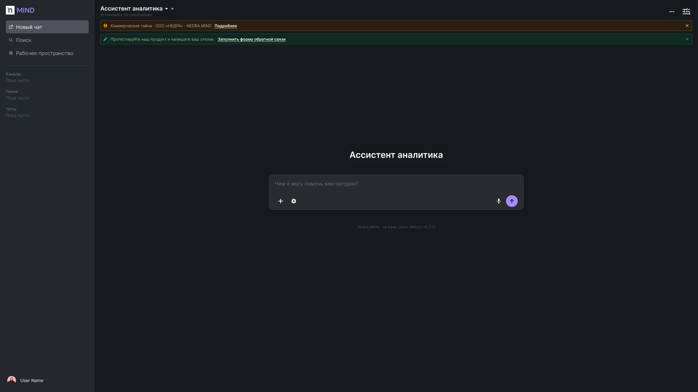
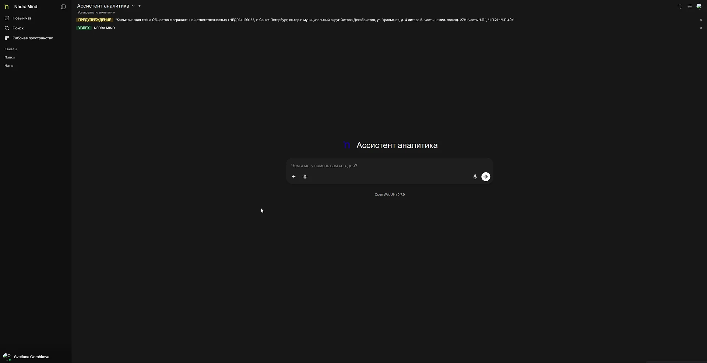

С 2022 года руковожу дизайном в Nedra Digital. Пришла в компанию без дизайн-функции и построила направление, которое сегодня поддерживает единый бренд для экосистемы из 30+ продуктов и 550+ сотрудников — от интерфейсов и дизайн-системы до видео, конференций и корпоративных коммуникаций.
Проекты компании защищены NDA — материалы приведены в объёме, согласованном для публичного портфолио.
Старт с нуля
В августе 2022 года в Nedra Digital не было дизайн-функции. Был только логотип — нужно было не просто «сделать брендбук», а собрать с нуля функцию, которая представит компанию как единый бренд.
Результат: направление дизайна, команда, дизайн-система и процессы, которые работают на 500+ человек и 9 продуктовых команд.
Зона ответственности
Дизайн вырос от логотипа до всей визуальной идентичности компании. Сегодня я отвечаю за визуальный контур компании во всех ключевых digital- и offline-точках контакта.
Продукт
- Сайты и цифровые продукты экосистемы
- Участие в создании новых продуктов от концепции до MVP
Бренд и коммуникации
- Маркетинговые и промо-материалы
- Социальные сети
- Презентации
- Видео
Мероприятия и внутренние коммуникации
- Конференции, выставки, вебинары и другие мероприятия
- Корпоративные и внутренние коммуникации
Айдентика и дизайн-система
9 продуктовых команд работают в единой дизайн-системе, которую я инициировала и внедряю.
В основе архитектуры branded house: материнский бренд Nedra Digital объединяет продукты по направлениям бизнеса, а цветовое кодирование сразу подсказывает пользователю, где он находится. Технический слой — на открытой Consta, сверху — кастомный слой Nedra.
В начале 2026 защитила и провела ребрендинг: новые логотипы, обновлённая книга фирменного стиля и основа для дизайн-системы. Разбор — в отдельном кейсе.
.png)
Команда
Собрала дизайн-команду с нуля: наём, роли, процессы, наставничество и менторинг. Работала кросс-функционально с продуктовыми командами — дизайн встроен в разработку, а не «приходит после».
Процессы
Дизайн-стандарты в компании работают не только для дизайнеров, но и для всей организации 500+ человек:
- библиотека шаблонов
- онбординг и обучающие материалы
- регламент работы с сайтом компании
Эффект: бренд держится не на дизайнерах, а на процессах — он не «рассыпается», когда растёт компания.
Избранные проекты
Корпоративный сайт nedra.digital
Сделала корпоративный сайт экосистемы от начала до конца сама: структура, сценарии, визуальный язык, дизайн страниц.
Сайт построен вокруг четырёх этапов нефтегазового Upstream — разведка, разработка, строительство скважин, добыча. Отдельно — сквозные решения и бизнес-консалтинг, у каждого продукта своя страница. В апреле 2026 провела ребрендинг и полное обновление.
Корпоративное видео Nedra.PLATFORM
Видео — часть моей зоны ответственности. Ролик о платформе Nedra.PLATFORM победил в конкурсе «Лучшее корпоративное видео 2026» в категории «Корпоративный 3D-ролик».
Nedra.MIND
Nedra.MIND — ИИ-агент, встроенный в продукты компании и понимающий команды на естественном языке. Я провела аудит UI, собрала кастомную дизайн-систему поверх Consta и перепроектировала ключевые экраны.
Экран входа


Было: слабый брендинг, базовое название сервиса, поля ввода и кнопка сливаются, при наведении на кнопку ничего не происходит.
Стало: брендированный экран входа с лого Nedra.MIND, различимые поля и кнопка, интерфейс в единой палитре.
Главный экран


Было: нет понимания, чей продукт; слабая иерархия цветов и шрифтов; инфо-сообщения и поля с информацией сливаются; слабый копирайтинг; информация о пользователе дублируется.
Стало: брендированная шапка и меню, инфо-сообщения выделены по типу, единая типографика и иерархия, интерфейс на переменных дизайн-системы.
Итоги года
О компании
Nedra Digital — российский разработчик и интегратор инженерного ПО и бизнес-консалтинга для нефтегазовой отрасли. Продукты компании закрывают всю цепочку Upstream — от геологоразведки до добычи — и обеспечивают единство данных, инженерных расчётов и экономических моделей для принятия решений.
В команде 500+ отраслевых и IT-экспертов; компания работает на рынке России и СНГ более пяти лет. Экосистема включает 30 продуктов, включая платформу Nedra.PLATFORM, ИИ-агента Nedra.MIND и платформу данных Nedra.DATA.